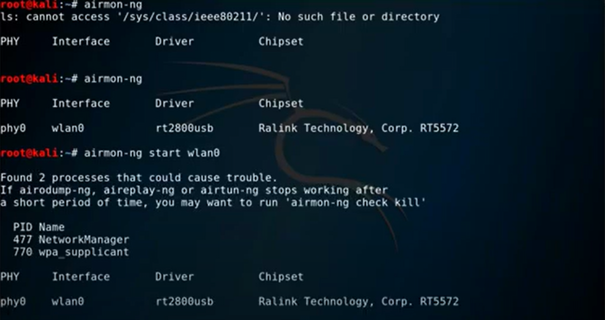
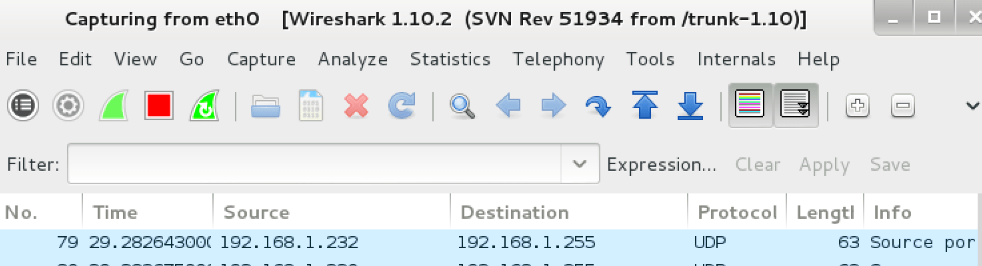

ACT-1
We used The Kali Linux during semester. That is really useful (CS) software That software provides (CS) Tools and necessary kit for security.So we can make define wih key words the defining is exactly an open-source operating system used to implement security-related applications. There are some problems in our lab sessions but i get the logic of hacking and what we used in our class. So i download the kali linux (Free) from the download Kali To use Kali seperately i need to download a virtual machine that provides for me a workplace for Kali. I downloaded the virtual machine (It seperates the disk virtually and you can make tests or security) after that i uploaded the kali into that virtual machine operator.Vmware There are so many versions i used the Vmware Virtual Machine.
Also there is online version of course that is not same with normal version but i used it and analyze it, is there cricital differents with normal one. There are some scanning tools in Kali. You can get from the name "Scanning", they helps us to scan the environment (network ip especially) and we choose ways according to our scanning results.
When you print screen the IP the Kali shows you a lot of option and address. It helps about command and how can we combine the comands together. Thanks to helpin system of kali , users can combine and apply commands

We analyzed a lot of command in our class but we can not analyze all of them of course because of that i started to use analyze the by mself at home. While i am searching i found scannig way the wireless access points around of us. I watched a youtube video which uploaded by MR.Ahmed Ibrahim Video Link I saw that command and i tried it. As i understand from that command i can scan nearly wireless access points and if i want i can attack them.
In our class we tried another open-source tool to determine and analyze the traffic of network. Which named Wireshark. It helps us to analyze the network traffic. While i was searching i saw Wireshark is not just a toll that is a company about solving network problems and they help people about network systems an network protocols non profit enterprise.
In class we use the Wireshark to analyze an ip traffic actually i made what Mr. Beran made but because of one reason i do not know it it dd not complete i can see the ip result but it did not finish. I will put it at least we can see the interface of that tool and ip , symbols etc.
